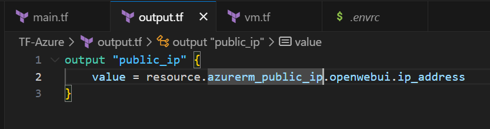
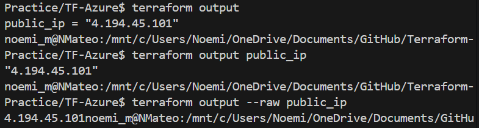
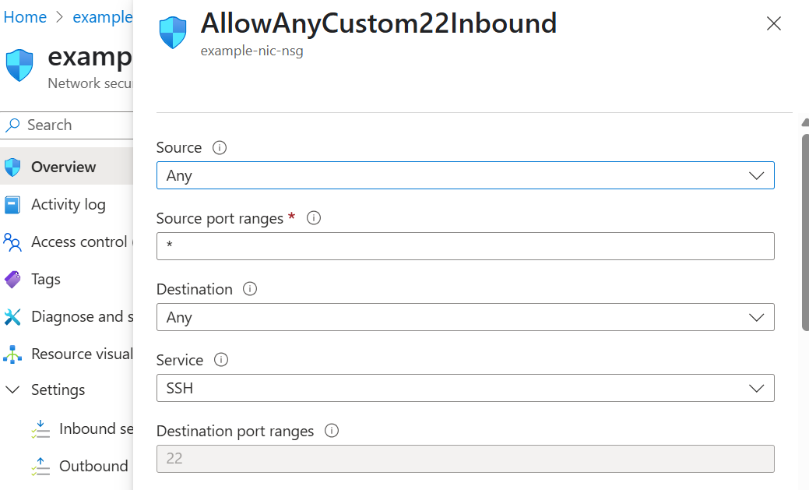
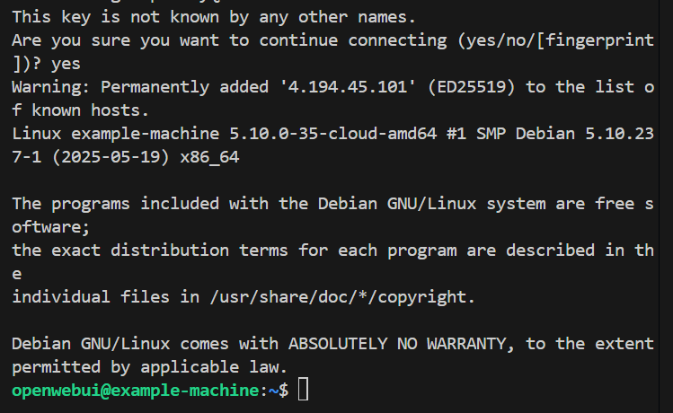

Using Terraform to provision a Linux VM
I was able to provision a VM on Azure using Terraform.
After the VM was provisioned, I established an SSH conection into the VM via a CLI.
Terraform
Terraform is intuitive, and has a very useful Terraform Registry with extensive documentation and resources.
Below, the code to provision the Linux VM, the resource group, virtual network, subnet, network interface, and other settings needed for the VM.
All variables have been set as environmental variables, and/or GitHub Secrets variables.
vm.tf
data "azurerm_platform_image" "openwebui" {
location = azurerm_resource_group.openwebui.location
publisher = "Debian"
offer = "debian-11"
sku = "11"
}
data "cloudinit_config" "config" {
gzip = true
base64_encode = true
part {
filename = "init.sh"
content_type = "text/x-shellscript"
content = file("${path.module}/scrpts/provision_basic.sh")
}
part {
content_type = "text/cloud-config"
content = file("${path.module}/scrpts/cloud_init.yaml")
}
}
resource "azurerm_resource_group" "openwebui" {
name = "example-resources"
location = "South East Asia"
}
resource "azurerm_virtual_network" "openwebui" {
name = "example-network"
address_space = ["10.0.0.0/16"]
location = azurerm_resource_group.openwebui.location
resource_group_name = azurerm_resource_group.openwebui.name
}
resource "azurerm_subnet" "openwebui" {
name = "internal"
resource_group_name = azurerm_resource_group.openwebui.name
virtual_network_name = azurerm_virtual_network.openwebui.name
address_prefixes = [cidrsubnet(tolist(azurerm_virtual_network.openwebui.address_space)[0], 8, 2)]
}
resource "azurerm_public_ip" "openwebui" {
name = "openwebui-ip"
location = azurerm_resource_group.openwebui.location
resource_group_name = azurerm_resource_group.openwebui.name
allocation_method = "Static"
}
resource "azurerm_network_interface" "openwebui" {
name = "example-nic"
location = azurerm_resource_group.openwebui.location
resource_group_name = azurerm_resource_group.openwebui.name
ip_configuration {
name = "internal"
subnet_id = azurerm_subnet.openwebui.id
private_ip_address_allocation = "Dynamic"
public_ip_address_id = azurerm_public_ip.openwebui.id
}
}
resource "azurerm_linux_virtual_machine" "openwebui" {
name = "example-machine"
resource_group_name = azurerm_resource_group.openwebui.name
location = azurerm_resource_group.openwebui.location
size = "Standard_A2_v2"
admin_username = "openwebui"
network_interface_ids = [
azurerm_network_interface.openwebui.id,
]
admin_ssh_key {
username = "openwebui"
public_key = file("~/.ssh/id_ed25519.pub")
}
os_disk {
caching = "ReadWrite"
storage_account_type = "Standard_LRS"
}
source_image_reference {
publisher = data.azurerm_platform_image.openwebui.publisher
offer = data.azurerm_platform_image.openwebui.offer
sku = data.azurerm_platform_image.openwebui.sku
version = data.azurerm_platform_image.openwebui.version
}
}Images




